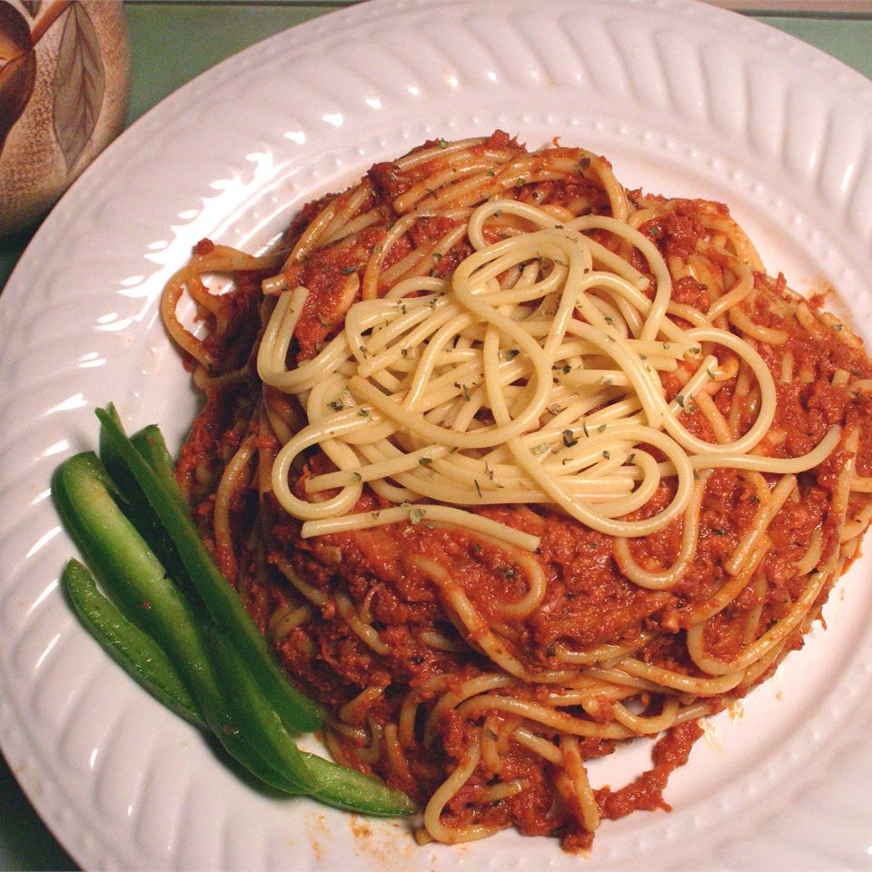

Homemade Spaghetti

Description
A stunning homemade spaghetti which will rock your tastebuds! Can be made quickly! Even if it may not be the most expensive / luxurious plate of spaghetti, it'll fill you up and keep you satisfied! That's for sure!
Ingredients
- 500g Ground Beef
- 1-2 Bottles of Ragu Sauce
- Pinch of Salt
- Pinch of Pepper
- 2 tsp Cayenne Pepper
- 1 Box of Spaghetti
- 1/4 Block of Grated Cheddar Cheese
Steps
- On medium high heat, cook the ground beef until brown.
- While your beef is cooking, bring a large pot of salted water to a boil.
- Once at a boil, add your spaghetti to it and cook it to al dente. Refer to box for timings.
- While the pasta is cooking, add the ragu sauce, pepper, salt, cayenne pepper to your ground beef. Lower the head and continue to stir while you wait for your pasta to cook.
- Drain your pasta and mix with your ground beef spaghetti sauce you just made.
- Serve while hot and add some grated cheddar cheese for even more flavour! Enjoy!